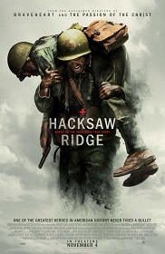

Mi libro favorito es "La voz dormida", si situa durante la guerra civil española mas en
concreto durante la post-guerra. La historia trata sobre una joven mujer llamada Pepita,
quien se caracterizaba por ser una mujer valiente y su hermana llamada Hortensia quien está
embarazada y presa en la cárcel madrileña de las ventas por pertenecer a la guerrilla de esa
época. Se narra el innecesario sufrimiento de las mujeres en las cárceles en esos años
inmediatamente posteriores al fin de la contienda
Pelicula favorita

Mi película favorita es "Hasta el último hombre" y trata sobre un personaje llamado
Desmond Doss el cual se enlista en el ejercito para ser participe dentro de la segunda guerra
mundial, sin embargo, quiere que su participacion sea algo diferente, ya que prentede luchar sin
armasn porque sel no quiere quiitar vidas sino al contario salvar las que se puedan.
Su sueño es ser médico y como tal se unirá al ejercito. Siendo el un mienbro muy importante del
escuadrón médico logró grandes hazañas.